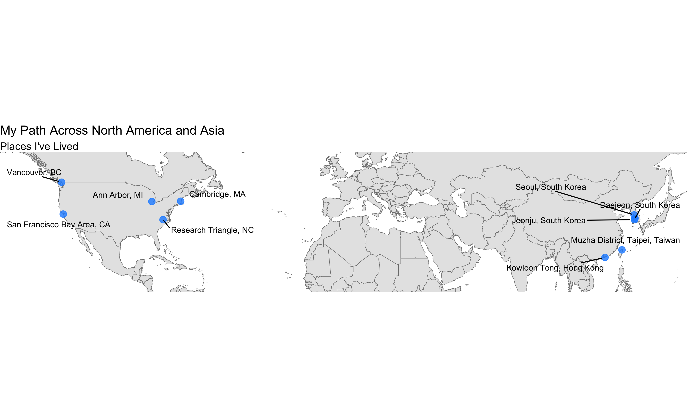
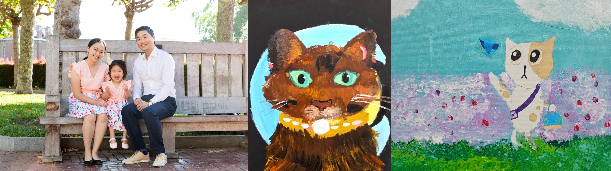

So far, I have lived in more than a dozen cities across five countries on two continents: South Korea (Jeonju, Daejeon, Seoul, Changwon, and Dongducheon); Hong Kong (Kowloon Tong); Taiwan (Taipei’s Muzha District); Canada (Vancouver); and the United States (the San Francisco Bay Area, California; Ann Arbor, Michigan; Cambridge, Massachusetts; and the Research Triangle, North Carolina). When I was little, I lived in a tight-knit semi-rural community. Later in life, I lived in some of the world’s largest cities.
Like my upbringing, my career path has had many turns and twists. I spent years working in the tech industry and the digital activism community. Before graduate school, I worked as a strategy manager at a software startup. While in college, I served as the youngest member of the user services advisory board at Naver, South Korea’s largest internet company, often called the Korean Google. I was an active member of the Korean branch of Creative Commons and Global Voices, wrote regular op-eds on tech and society for local newspapers and magazines, and published several books on the subject. I helped my alma mater, Korea University, launch South Korea’s first OpenCourseWare website, following the MIT OpenCourseWare model, while completing two study abroad programs in Hong Kong and Taiwan. I also spent two years in the world of street-level bureaucracy. As an alternative to mandatory military service, I served in the district office of one of the most economically distressed areas in Seoul. In that role, I helped classify and triage citizen service requests ranging from potholes to housing, similar to those handled through 311 systems in the United States.
In 2014, I moved to the United States for my doctoral studies with a scholarship from the Korea Foundation for Advanced Studies, the oldest and one of the most competitive scholarships for Koreans pursuing graduate degrees abroad (equivalent to NSF graduate research fellowship). I earned an M.A. and a Ph.D. in political science from UC Berkeley. I also studied computational social science and political economy. Berkeley now offers designated emphases in both fields, but those options were unavailable at the time. While still a graduate student, I taught a graduate-level course on computational methods as the instructor of record several times. Before completing my doctoral program, I became a predoctoral fellow at the SNF Agora Institute at Johns Hopkins University. There, I co-developed a project that used big data to map the modern agora and remained affiliated with the institute for five years. Soon after graduating from the Ph.D. program, I went back to Korea and taught for a year at the KDI School of Public Policy and Management, South Korea’s premier public policy school. At KDI, I helped develop the country’s first policy-focused data science program. I also published a Korean-language book on using data for the common good. The book was positively reviewed by major newspapers across the ideological spectrum, selected by the Korean government as a recommended book in the social sciences, and distributed to public libraries nationwide.
I then returned to the United States and worked as a data scientist at Code for America, a leading civic tech organization. In that role, I worked with federal, state, and local governments to improve access to safety net programs, placing me at the forefront of innovation in benefit delivery. After two years in public service, I left Code for America to return to academia as a policy scholar and public interest data scientist, seeking to broaden and deepen my research expertise and impact. My path has been anything but linear. I have built a career spanning civic tech and academia because I have pursued not a particular role, but a path that allows me to follow my North Star: making policy work and helping people.
At the same time, my perspective and career path have been deeply informed by where I began. I’m a first-generation college student from a working-class family. My late father worked as an electrician at paper mills for 32 years. These experiences guide the research questions I pursue and the problems I tackle.
On a personal note, I used to practice martial arts (Taekwondo, Wushu, and Kendo), but I now focus on distance running. I have finished three half marathons so far (San Francisco [2x], Berkeley), and am training for a full marathon in March 2027 (Napa Valley). I believe we can learn a great deal about ourselves by voluntarily pushing our limits. My appreciation for endurance may stem from my religious upbringing. In Greek, the language of the New Testament, the words for endurance and patience are the same (hypomonē).
I am a voracious reader and music aficionado. I also enjoy going to museums, hiking, and birdwatching.
Below is a collection of essays I’ve written over the years, organized into three categories: professional reflections, personal reflections, and career advice. You can also find my writing on Substack.
Professional Reflections
Personal Reflections
Career Advice
-
How to Write a Statement of Purpose for Graduate School in Political Science / Public Policy
-
Academic Job Talks as Storytelling: Why Character Matters as Much as Plot
Korean essays
